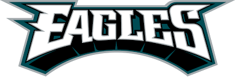
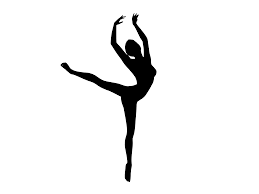

I have been going to Eagles games since I was born. my family has had season tickets since Lincoln Fiancial Field was built. The Eagles games are considered a family gathering for us, we all enjoy it. We have been with the Eagles through thick and thin and it was very rewarding to see them succeed.
I love my dogs because they never fail to make my day better. I have 2 a girl named Pearl, and a boy named Ridge. They are alot of fun to playwith, and I love them.

>I have been dancing for 9 going on 10 years. I have made great friends and dance everyday. This is a great artistic release for me.